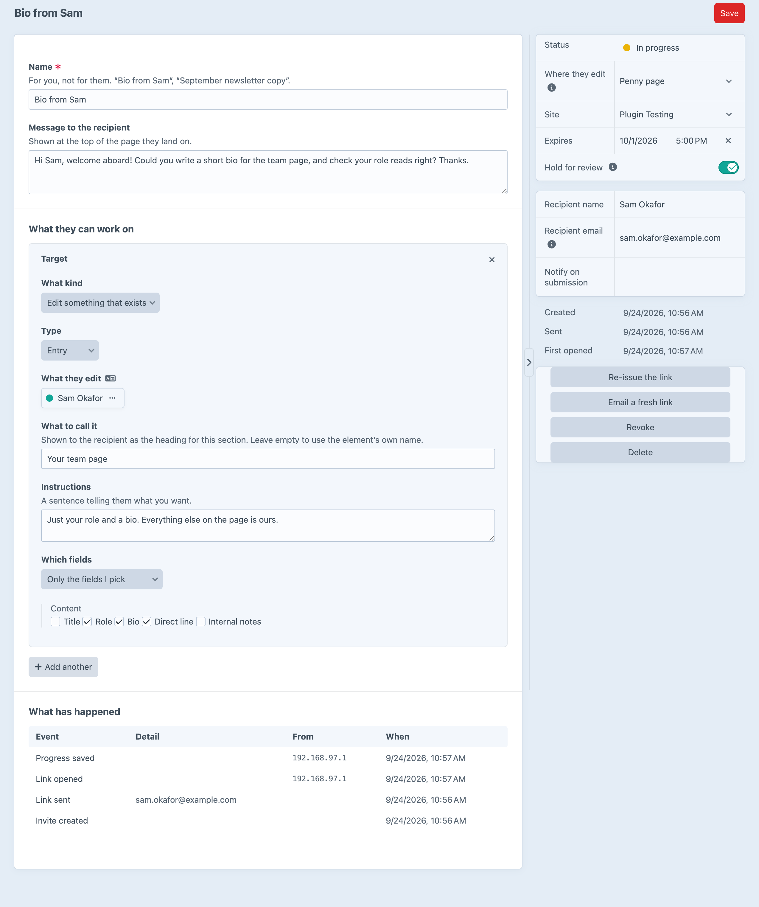
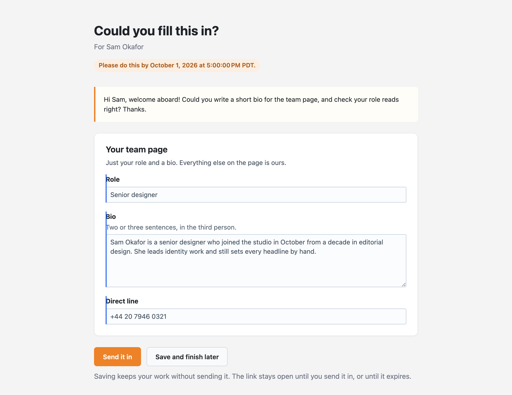
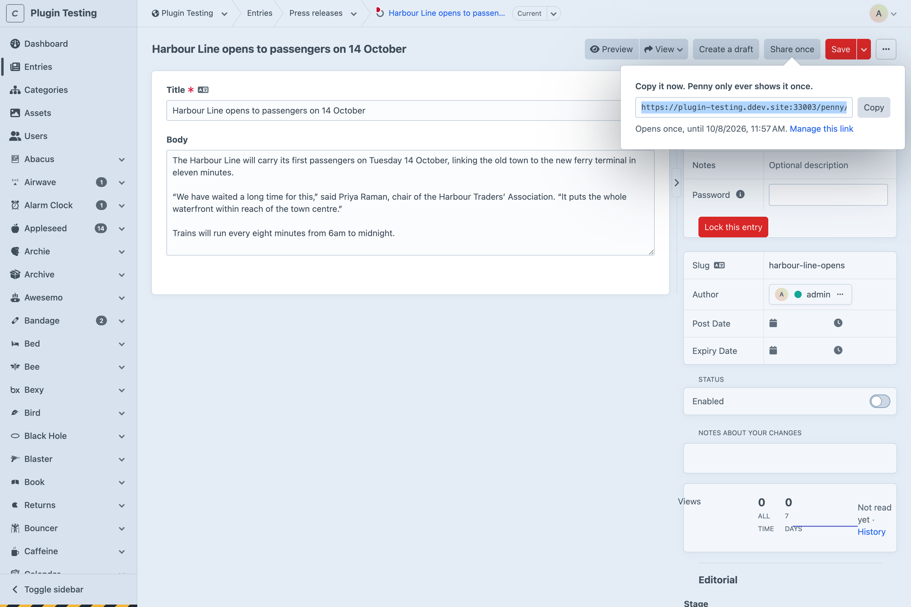
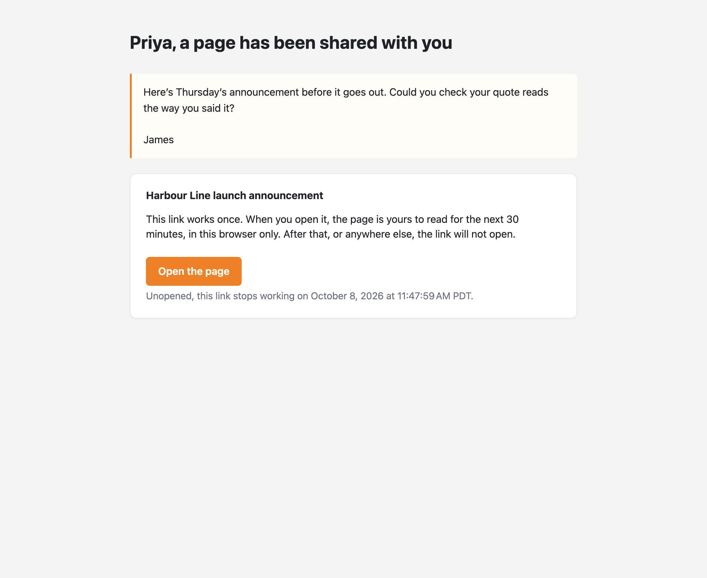
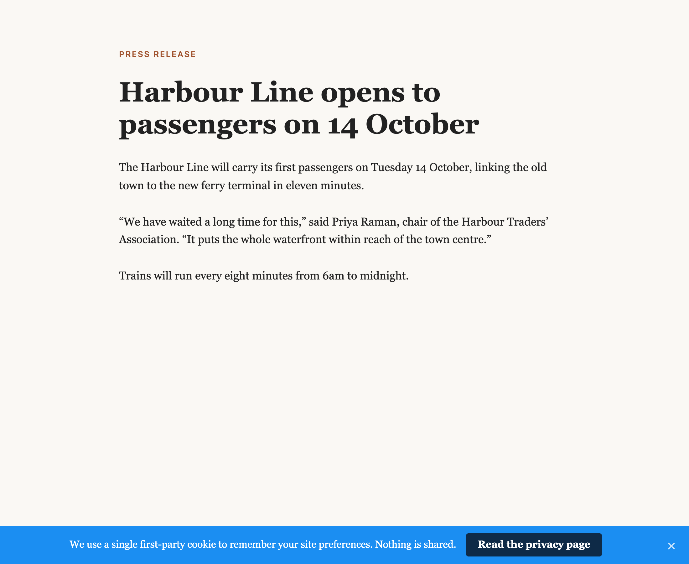

One-time content invites:
a single-use link to exactly the fields you pick.
Somebody outside the team gets a single-use link to the fields you chose. No user, no group, no permissions to tidy up afterwards.
Pick what they work on, tick what they may touch, and Penny gives you the link. Once.

A standalone page rendering Craft's real field inputs, so Matrix, CKEditor, assets and relations all just work.

The fields you tick are the only ones Penny renders and the only ones it writes. Anything else in the POST is dropped.
Craft's Share link works for anyone it's forwarded to. Penny's opens once, in one browser.


Safe Links, mail scanners and chat previews fetch links. None of them press buttons.

A disabled entry, on its real URL, through your own templates. Reloads for 30 minutes (the default).
Another browser, a revoked invite or an elapsed window all land on a closed page.